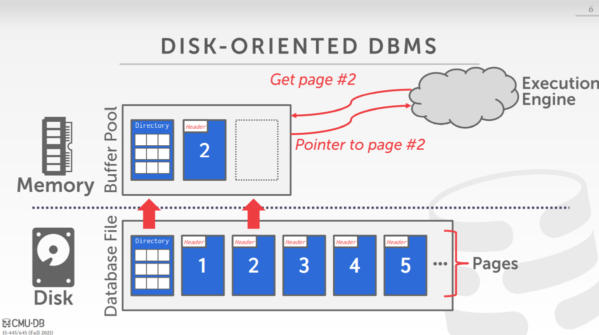

[CMU15445]:缓冲池
DBMS的职责就是管理数据在磁盘和内存之间的传输，因为对数据的修改必须在内存中进行
磁盘，内存以及执行引擎之间的交互关系大概如图

注意到当一个Page被拷贝到内存时，它的内容与磁盘中是完全一样的
最终的实现效果可以从两个角度来评判
空间控制(spatial control)
从空间角度来看，对于那些在查询中需要连续访问的page, 理想的效果是将这些连续查询的page放置在从磁盘的连续空间中，这样就可以做到依序I/O，避免随机访问，减少I/O时间
时序控制
时序控制的目的主要是减少从磁盘读取的次数
Lock & Latch
首先要区分一下Lock 和 Latch的区别
Lock
Lock是一种高级的逻辑原语，它保护数据库的内容(例如元组、表、数据库)不受其他事务的影响, 事务将在整个期间持有一个锁, 数据库系统可以向用户公开在运行查询时持有哪些锁。Lock需要能够回滚更改
Latch
Latch是DBMS用于其内部数据结构(例如，哈希表，内存区域)的关键部分的一种低级保护原语。Latch仅在操作期间保持。
Latch不需要能够回滚更改
简单地说，Lock是一种高层次的保护，和事务相关，属于应用层面，Latch则比较底层，是属于mutex那一类数据内部的锁
缓冲池
- Buffer Pool manager
Buffer Pool manager负责管理缓冲池，当数据库上的程序需要磁盘上的块的时候，它就会向Buffer Pool manager发出请求，
如果当前的Buffer Pool中存放着所需要的page, 那么就直接将该数据块传递给程序，否则就从磁盘中拷贝一份
page, block, frame
这三者其实意思差不多，只不过在数据库中，我们将硬盘上的block称为page, 将Buffer Pool中的block称为frame
page table
page table的作用是记录当前的Buffer Pool中存有哪些page, 即page table与Buffer Pool是一对一的
page table维护着page id–>frame id的映射关系，具体是page id —-> frame 指针的哈希表
如上图所示，page table除了page id 到frame id的映射，还维护了一些其它的元数据
脏位(Dirty Flag) 用于判断缓冲池中的内容与磁盘是否同步
Pin/Reference Counter
在这里介绍一下Pin的概念，当线程访问Buffer Pool中的Page的时候，必须得对缓冲池中的page进行
Pin操作，通常就是对该page的Pin Counter + 1, 当一个page的Pin Counter大于1的时候，如果想要对page进行操作就必须得等待，其实就是互斥量的概念
缓冲池分配策略
通常有两种策略
global policies
指所有的查询都是用同一个缓冲池的替换策略
local policies
指针对不同的查询可以使用不同的替换策略
实际上，现在大多数系统都混合使用这两中策略
缓冲池优化
多重缓冲池
DBMS为了达到不同的目的可以建立多个缓冲池，如一个数据库一个缓冲池，或者一个缓冲池存储一种page类型
然后每个缓冲池可以采取适合他们自己的策略，这样可以减少latch的竞争并且改善空间局部性
将tuple映射到缓冲池通常有两种映射方法
Object Id 映射
Object Id是对记录Id的拓展，其包括关于每个缓冲池管理的数据库对象的元数据
哈希表映射
采用简单的哈希映射将tuple映射到不同的Buffer Pool
预取技术
在取一个page的时候，可以顺便将该page后面的多个page同时取到Buffer Pool,以此来减少I/O
这种技术常应用于依序查询和索引查询
依序查询

索引查询
数据库中的索引通常采用B+树进行组织，当访问到叶子节点的时候，就可以预取出叶子节点后面的节点，尽管这些节点在物理上可能并不连续
Scan sharing
该技术适用于并发查询，见下面的例子
假设有如下两个查询
Q1进行Sum计算，需要遍历所有的page，当其遍历到page 3时，另一个查询Q2开始，它进行AVG运算，也需要遍历所有的page
如果采用scan sharing技术，那么Q2的cursor就可以直接调到Q1的cursor处，它们两个一起进行查询
在Q1查询完毕之后，Q2已经遍历了page3 page4 page5，所以Q2需要回到首部继续查询
scan sharing的思想就是一个查询使用另一个查询的中间过程值，即使这两个查询并不完全相同
顺便解释一下result cashing的概念
result cashing
将查询的结果缓存下来，仅当再一次进行相同的查询时才有用
微扫描(light scan)
微扫描是指当进行查询时，绕过缓冲池，直接为该次查询在内存中开辟一个新的空间，用于存放从磁盘中读取的page，当查询结束的时候，再将这些page从内存中释放
- 优点
- 当读取很多数据页时，可以绕过缓冲池的开销
- 当单次查询会读取很多page的时候，可以避免污染缓冲池，使得缓冲池的page被挤出去
- 优点
OS 页缓存
大多数磁盘操作都通过OS API进行。除非有明确的说明，否则操作系统维护自己的文件系统缓存。
大多数DBMS使用direct I/O,这是操作系统的I/O选项，绕过操作系统的缓存，直接将文件复制进数据库缓冲，而不用首先将文件复制
进文件缓冲
但有些厂商，如PostgreSQL,他们就采用了文件缓存，因为这样当发生page fault的时候，就可以直接从文件缓冲区中读取，而不用从磁盘进行I/O
缓存替换策略
LRU
即最近最少使用(Least Recently Used)策略，需要追踪每个page, 每次移除最近最少使用的page
Clock
Clock算法是对LRU算法的近似，该算法不需要追踪每个page的时间戳，具体思想是将缓冲池中的page当做一个循环的数组
同时，每个page都附加一个额外的
reference bit,当指针(clock hand)指向page时，如果该page的reference bit 为1，那么将其置为0，否则将其从缓冲池中去除
这两种算法都有一个缺点，就是当进行大量顺序访问时效率很低
因为进行顺序访问时，刚刚访问完的page往往是之后就不在需要的page
LRU-K
LRU-K是对LRU以及Clock算法的改进，可以看看下面的文章
优先级提示(Priority Hint)
优先级提示允许事务根据查询执行期间每个页面的上下文告诉缓冲池页面是否重要
这里给出一个B+树索引的例子
当执行Q1查询的时候，根据查询我们可以直到每次查询的id都是上一次查询的id+ 1，因此我们就可以将page0, page1, page24加入缓存，因为他们在树中进行查找会需要
Dirty page
当缓存中存在Dirty Page，而此时缓冲区已满，需要进行替换时，此时有两种选择
fast
直接将那些非dirty的页面替换出去，但这些页面可能将来会需要
slow
对那些dirty page进行更新，将他们写回磁盘，然后再将他们进行体寒
实际上，这两种做法非常难以权衡，所以，数据库的底层通常会有一个专门的线程，用以将这些dirty page定时刷新到磁盘
本博客所有文章除特别声明外，均采用 CC BY-SA 4.0 协议 ，转载请注明出处！